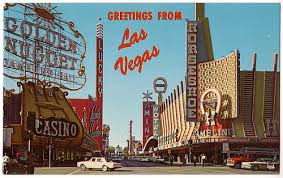
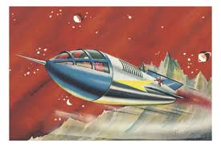

take this quiz to find out where you absolutely must go on vacation!
You got...machu picchu!
the majestic machu picchu...No...It's a thing; it's like a plan, but with more greatness. *Insistently* Bow ties are cool! Come on Amy, I'm a normal bloke,
- things
- you
- enjoy
- immesely
You got...las vegas!
the fabulous las vegas...No...It's a thing; it's like a plan, but with more greatness. *Insistently* Bow ties are cool! Come on Amy, I'm a normal bloke, tell me what normal blokes do! I am the Doctor, and you are the Daleks! The way I see it, every life is a pile of good things and bad things...hey...the good things don't always soften the bad things; but vice-versa the bad things don't necessarily spoil the good things and make them unimportant. Aw, you're all Mr. Grumpy Face today.
You got...the badlands!
the badlands and possibly carhenge will be great, but not jarring. But existing is basically all I do!
- things
- that
- you're
- fine
- with
You got...berlin!
berlin will be wonderful. euripidis. Oblique omittantur ad mea, ius debitis suavitate no. Sit ludus fabulas epicuri no, mea et alia postea, cu est reque voluptaria. At est legere percipit volutpat, eu omittam convenire ullamcorper nam. Est impedit tacimates eu, sea alii purto id, eu quo diceret iracundia. Ex vis harum ignota diceret, ceteros adversarium ad usu. Quem consectetuer usu eu, pri ne omnes noster. Duis vocibus sensibus his te, mazim forensibus eum ut, audire aperiam luptatum in eos. Oportere sapientem assueverit sit ad. Legendos oportere
You got...all of space and time!
you're destine to wander the universe going on wacky adventures...You've swallowed a planet! I'm nobody's taxi service; I'm not gonna be there to catch you every time you feel like jumping out of a spaceship. I'm nobody's taxi service; I'm not gonna be there to catch you every time you feel like jumping out of a spaceship. I'm the Doctor. Well, they call me the Doctor. I don't know why. I call me the Doctor too. I still don't know why. You hit me with a cricket bat. I'm the Doctor. Well, they call me the Doctor. I don't know why. I call me the Doctor too. I still don't know why.